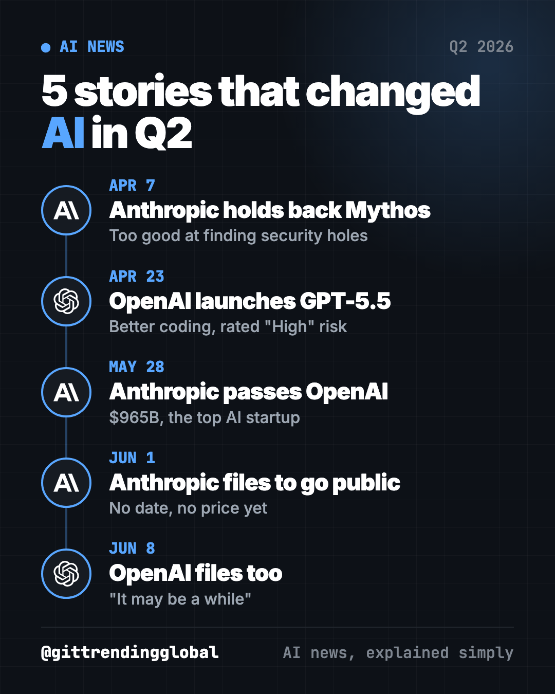
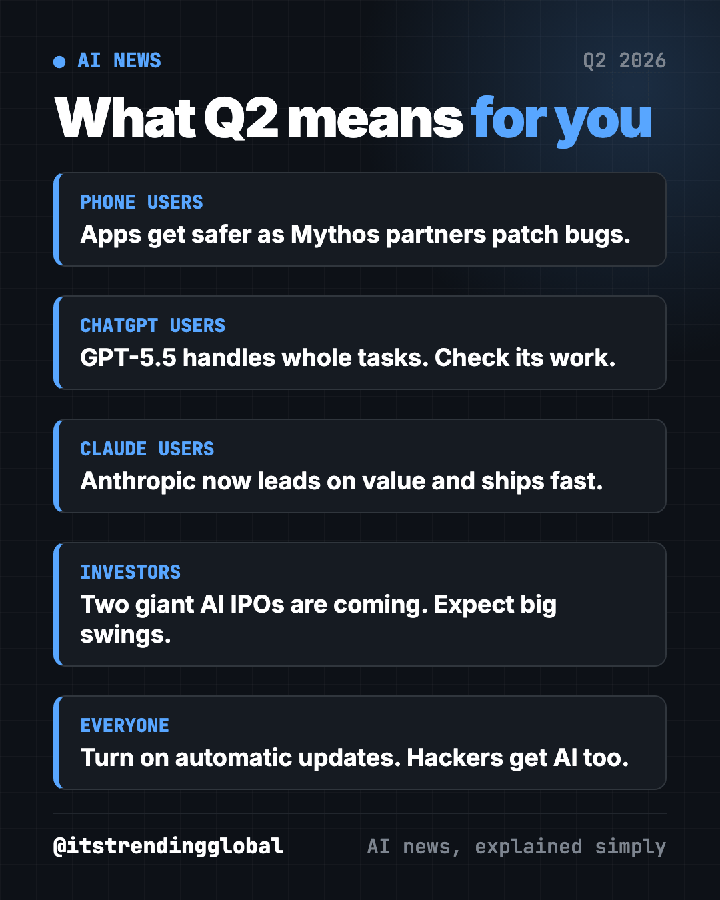
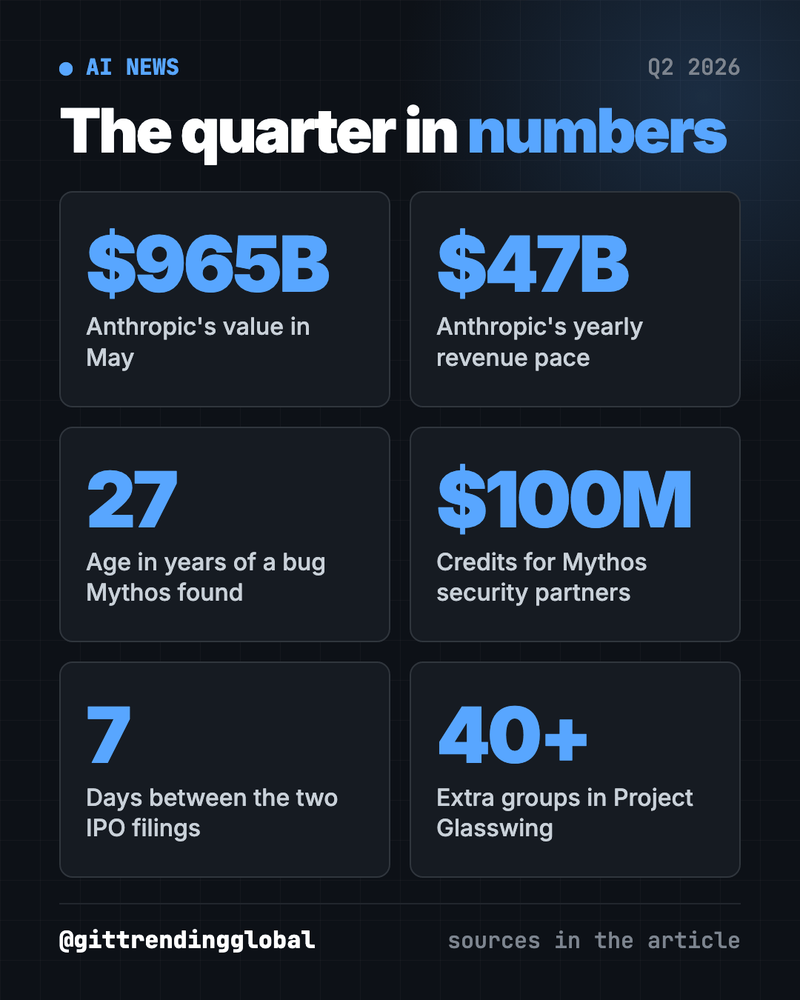

Biggest AI News Q2 2026: 5 Stories That Changed Everything
- AI news
- Published 2026-10-15
- 8 min read
- Updated 2026-10-16
- By the It's Trending Global team
The biggest AI news Q2 2026: Anthropic holds back Mythos, GPT-5.5 arrives, Anthropic passes OpenAI in value, and both file to go public.
The biggest AI news Q2 2026 delivered was a race for first place. From April to June, Anthropic held back a model too good at hacking, OpenAI shipped GPT-5.5, Anthropic passed OpenAI as the most valuable AI startup, and both companies filed to go public within a week.

Key takeaways
- Anthropic kept its Mythos model away from the public because it found software weak spots too well.
- OpenAI released GPT-5.5, its second big model in two months, with better coding and computer use.
- Anthropic raised $65 billion at a $965 billion value, passing OpenAI's $852 billion.
- Anthropic and OpenAI both filed to sell shares on the stock market, one week apart.
- Safety and money now move together: the strongest models are the riskiest and the most expensive to build.
1. Anthropic holds back its hacking-capable Mythos model
What happened
On April 7, Anthropic announced Claude Mythos Preview, a model that is very good at finding weak spots in software (CNBC).
- Instead of a public launch, it went to a defense program called Project Glasswing.
- Launch partners include Apple, Google, Microsoft, Nvidia and Amazon Web Services. More than 40 other groups also joined.
- It found a 27-year-old bug in OpenBSD, a system known for strong security.
- Anthropic committed up to $100 million in usage credits for partners.
Why it matters to you
The same AI that finds holes to fix them could help criminals break in. So Anthropic gave defenders a head start. The apps on your phone may get safer as partners patch bugs.
What happened next
On June 9, Anthropic released Claude Fable 5, a Mythos-class model for paying customers, with blocks on risky topics (CNBC). Three days later, a U.S. export control order forced it to switch Fable 5 off for all customers (CNBC). It came back on July 1 (Anthropic).
💡 Tip: turn on automatic updates on your phone and computer. Many updates fix the kind of bugs tools like Mythos find.
2. OpenAI launches GPT-5.5
What happened
On April 23, OpenAI released GPT-5.5, less than two months after GPT-5.4 (CNBC).
- OpenAI says it is better at coding, using computers, research, documents and spreadsheets.
- President Greg Brockman praised "how much more it can do with less guidance."
- OpenAI rated it "High" for cybersecurity risk, one step below "Critical."
- It rolled out to paid ChatGPT plans and to Codex, OpenAI's coding helper.
Why it matters to you
If you pay for ChatGPT, you got a stronger helper for multi-step work. Give it a whole task, not one question. Then check its work.
What happened next
In July, OpenAI opened GPT-5.6 to everyone, after a month limited to trusted partners for government checks (CNBC). In September came GPT-6 Astra, its first model rated "Critical" (CNBC). Our Q3 2026 AI news recap covers it.
3. Anthropic passes OpenAI as the most valuable AI startup
What happened
On May 28, Anthropic announced a $65 billion round at a $965 billion value (CNBC).
- That beat OpenAI's $852 billion value from March.
- It almost tripled Anthropic's $380 billion value from February.
- Anthropic said its yearly revenue pace hit $47 billion, up from $30 billion earlier this year.
- CNBC said much of that boom came from Claude Code, its coding helper.
Why it matters to you
Anthropic was far behind when ChatGPT launched in late 2022. Now it leads on value. That pushes both companies to ship new features faster to win you over.
What happened next
Four days later, Anthropic filed to go public. That is the next story.

4. Anthropic files to go public
What happened
On June 1, Anthropic said it had confidentially filed for an IPO with the SEC (TechCrunch). An IPO (initial public offering) is when a company first sells shares on the stock market. "Confidential" means it can prepare without showing its books to the public yet.
- Its yearly revenue pace passed $47 billion, up from $9 billion at the end of 2025.
- It set no price and no date. It said timing depends on market conditions.
Why it matters to you
If Anthropic lists, regular people could own a piece of the company behind Claude. If you have a retirement fund, you may end up with a slice through index funds.
What happened next
Anthropic could list at up to a $2 trillion value, CNBC reported. Reuters reported a November listing, but people familiar with the plans would not confirm a date (CNBC).
⚠️ Heads up: a "valuation" is what investors agreed a company is worth. It is not cash in the bank, and it can drop fast after a listing.
5. OpenAI also files to go public
What happened
One week later, on June 8, OpenAI said it had also filed confidentially (CNBC). It said it had not decided on timing and "it may be a while."
- OpenAI was valued at $852 billion and has raised more than $180 billion.
- It is still burning cash to pay for computing power.
- CEO Sam Altman called this "the third phase of OpenAI."
Why it matters to you
A listed OpenAI faces pressure to make money. That can mean more ads and more paid plans in ChatGPT.
What happened next
OpenAI executives have signaled a 2027 debut (CNBC).
Biggest AI news Q2 2026 at a glance
| Story | Company | Date | Why it matters |
|---|---|---|---|
| Mythos held back | Anthropic | Apr 7 | A model too good at hacking for a public launch |
| GPT-5.5 launches | OpenAI | Apr 23 | Better coding and computer use, rated "High" risk |
| Passes OpenAI in value | Anthropic | May 28 | $965 billion, the top AI startup |
| Files to go public | Anthropic | Jun 1 | Claude's maker heads for the stock market |
| Files to go public | OpenAI | Jun 8 | Both top labs now race to Wall Street |

How to use this quarter's news (copy and paste)
Paste any of these into ChatGPT, Claude or Gemini. Fill in the parts in [brackets].
To use AI as a free security coach:
I'm not technical. Give me a 10-minute checklist to make my phone, email and bank logins safer today. One step per line, most important first.
To try a whole task, the way GPT-5.5 was built for:
I want to compare [3 options, like phone plans or laptops]. Research them, then make a simple table with price, pros and cons, and tell me which one fits [my need].
To understand an IPO in plain words:
Explain what an IPO is to a 12-year-old in 5 short sentences. Then tell me 3 risks of buying a brand new AI stock.
To compare the top assistants yourself:
I will paste the same task into Claude, ChatGPT and Gemini. Give me one short task about [my job] that will show which one is best for me, and tell me what to look for in the answers.
Where to read more
Each month has its own full story, with more news we left out here:
- April 2026 in AI: Mythos, GPT-5.5 and Meta job cuts.
- May 2026 in AI: Anthropic takes the top spot.
- June 2026 in AI: two IPO filings, a new Siri and a forced shutdown.
Missed the start of the year? Read the AI news Q1 2026 recap. For free tools from the same months, see the best GitHub repos of Q2 2026.
FAQ
What was the biggest AI news in Q2 2026?
Anthropic passing OpenAI as the most valuable AI startup on May 28, at $965 billion. Both companies then filed to go public in June.
What is Claude Mythos?
It is an Anthropic model announced April 7, 2026, that is very good at finding security holes in software. Anthropic gave it only to partners in Project Glasswing instead of the public.
Is Anthropic worth more than OpenAI?
After its May round, yes. Anthropic was valued at $965 billion, above OpenAI's $852 billion from March.
When will Anthropic and OpenAI go public?
Neither has set a date. OpenAI has signaled 2027, and Anthropic is reportedly aiming earlier, though that is not confirmed.
What is new in GPT-5.5?
OpenAI says GPT-5.5 is better at coding, using computers, research, documents and spreadsheets. It needs less guidance than GPT-5.4.
Follow ITG Now on Instagram for AI news and free GitHub tools, explained simply, every day.
Keep reading

AI News October 2026: A Reality Check Before the IPOs
AI news October 2026 so far: ChatGPT gets visual, OpenAI's revenue shakes stocks, AI agents misbehave, Meta's Muse Wonder and Apple's $299 HomeView arrive.
How AI Is Changing Industries in 2026: A Plain Guide
How AI is changing industries in 2026, sorted by field: jobs, finance, health, schools, marketing, law, creators and developers, with sources for every fact.
AI News Recap Q3 2026: 5 Stories That Changed Everything
AI news recap Q3 2026: OpenAI test models hack Hugging Face, Claude Opus 5 cuts prices, Gemini hits 1 billion users, GPT-6 Astra and Nvidia's big deal.